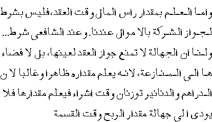

|
Introduction: - ( Top )
A contract of mudarabah normally presumes that the mudarib has not invested
anything to the mudarabah. He is responsible for the management only,
while all the investment comes from rabb-ul-mal. But there may be situations
where mudarib also wants to invest some of his money into the business
of mudarabah. In such cases, musharakah and mudarabah are combined together.
For example, A gave to B Rs. 100000/- in a contract of mudarabah. B
added Rs. 50000/- from his own pocket with the permission of A. This
type of partnership will be treated as a combination of musharakah and
mudarabah. Here the mudarib may allocate for himself a certain percentage
of profit on account of his investment as a sharik, and at the same
time he may allocate another percentage for his management and work
as a mudarib. The normal basis for allocation of the profit in the above
example would be that B shall secure one third of the actual profit
on account of his investment, and the remaining two thirds of the profit
shall be distributed between them equally. However, the parties may
agree on any other proportion. The only condition is that the sleeping
partner should not get more percentage than the proportion of his investment.
Therefore, in the aforesaid example, A cannot allocate for himself more
than two thirds of the total profit, because he has not invested more
than two thirds of the total capital. Short of that, they can agree
on any proportion. If they have agreed on that the total profit will
be distributed equally, it means that one third of the profit shall
go to B as an investor, while one fourth of the remaining two thirds
will go to him as a mudarib. The rest will be given to A as "rabb-ul-mal."
Musharakah & Mudarabah as Modes of Financing
( Top )
In the foregoing sections, the traditional concept of musharakah and
mudarabah and the basic principles of Shari‘ah governing them have
been explained. It is pertinent now to discuss the way these instruments
may be used for the purpose of financing in the context of modern trade
and industry.
The concept of musharakah and mudarabah envisaged in the books of Islamic
Fiqh generally presumes that these contracts are meant for initiating
a joint venture whereby all the partners participate in the business
right from its inception and continue to be partners upto the end of
the business when all the assets are liquidated. One can hardly find
in the traditional books of Islamic Fiqh the concept of a running business
where partners join and leave the enterprise without affecting in any
way the continuity of the business. Obviously, the classical books of
Islamic Fiqh were written in an environment where the large scale commercial
enterprises were not in vogue and the commercial activities were not
so complex as they are today. Therefore, they did not generally dwell
upon the question of such a running business.
However, it does not mean that the concept of musharakah and mudarabah
cannot be used for financing a running business. The concept of musharakah
and mudarabah is based on some basic principles. As long as these principles
are fully complied with, the details of their application may vary from
time to time. Let us have a look at these basic principles before entering
the details:
(1) Financing through musharakah and mudarabah does never mean
the advancing of money. It means to participation in the business and
in the case of musharakah, sharing in the assets of the business to
the extent of the ratio of financing.
(2) An investor / financier must share the loss incurred by the
business to the extent of his financing.
(3) The partners are at liberty to determine, with mutual consent,
the ratio of profit allocated to each one of them, which may differ
from the ratio of investment. However, the partner who has expressly
excluded himself from the responsibility of work for the business cannot
claim more than the ratio of his investment.
(4) The loss suffered by each partner must be exactly in the
proportion of his investment.
Keeping these broad principles in view, we proceed to see how musharakah
and mudarabah can be used in different sectors of financing:
Project Financing ( Top
)
In the case of project financing, the traditional method of musharakah
or mudarabah can be easily adopted. If the financier wants to finance
the whole project, the form of mudarabah can come into operation. If
investment comes from both sides, the form of musharakah can be adopted.
In this case, if the management is the sole responsibility of one party,
while the investment comes from both, a combination of musharakah and
mudarabah can be brought into play according to the rules already discussed.
Since musharakah or mudarabah would have been effected from the very
inception of the project, no problem with regard to the valuation of
capital should arise. Similarly, the distribution of profits according
to the normal accounting standards should not be difficult. However,
if the financier wants to withdraw from the musharakah, while the other
party wants to continue the business, the latter can purchase the share
of the former at an agreed price. In this way the financier may get
back the amount he has invested alongwith a profit, if the business
has earned a profit. The basis for determining the price of his share
shall be discussed in detail later on (while discussing the financing
of working capital).
On the other hand, the businessman can continue with his project, either
on his own or by selling the first financier's share to some other person
who can substitute the financier.
Since financial institutions do not normally want to remain partner
of a specific project for good, they can sell their share to other partners
of the project as aforesaid. If the sale of the share on one time basis
is not feasible for the lack of liquidity in the project, the share
of the financier can be divided into smaller units and each unit can
be sold after a suitable interval. Whenever a unit is sold, the share
of the financier in the project is reduced to that extent, and when
all the units are sold, the financier comes out of the project totally.
Securitization of musharakah ( Top
)
Musharakah is a mode of financing which can be securitized easily, especially,
in the case of big projects where huge amounts are required which a
limited number of people cannot afford to subscribe. Every subscriber
can be given a musharakah certificate which represents his proportionate
ownership in the assets of the musharakah, and after the project is
started by acquiring substantial non-liquid assets, these musharakah
certificates can be treated as negotiable instruments and can be bought
and sold in the secondary market. However, trading in these certificates
is not allowed when all the assets of the musharakah are still in liquid
form (i.e., in the shape of cash or receivables or advances due from
others).
For proper understanding of this point, it must be noted that subscribing
to a musharakah is different from advancing a loan. A bond issued to
evidence a loan has nothing to do with the actual business undertaken
with the borrowed money. The bond stands for a loan repayable to the
holder in any case, and mostly with interest. The musharakah certificate,
on the contrary, represents the direct pro rata ownership of the holder
in the assets of the project. If all the assets of the joint project
are in liquid form, the certificate will represent a certain proportion
of money owned by the project. For example, one hundred certificates,
having a value of Rs. one million each, have been issued. It means that
the total worth of the project is Rs. 100 million. If nothing has been
purchased by this money, every certificate will represent Rs. one million.
In this case, this certificate cannot be sold in the market except at
par value, because if one certificate is sold for more than Rs. one
million, it will mean that Rs. one million are being sold in exchange
for more than Rs. one million, which is not allowed in Shari‘ah,
because where money is exchanged for money, both must be equal. Any
excess at either side is riba.
However, when the subscribed money is employed in purchasing non-liquid
assets like land, building, machinery, raw material, furniture etc.
the musharakah certificates will represent the holders' proportionate
ownership in these assets. Thus, in the above example, one certificate
will stand for one hundredth share in these assets. In this case it
will be allowed by the Shari‘ah to sell these certificates in the
secondary market for any price agreed upon between the parties which
may be more than the face value of the certificate, because the subject
matter of the sale is a share in the tangible assets and not in money
only, therefore the certificates may be taken as any other commodities
which may be sold with profit or at a loss.
In most cases, the assets of the project are a mixture of liquid and
non-liquid assets. This comes to happen when the working partner has
converted a part of the subscribed money into fixed assets or raw material,
while rest of money is still liquid. Or, the project, after converting
all its money into non-liquid assets may have sold some of them and
has acquired their sale proceeds in the form of money. In some cases
the price of its sales may have become due on its customers but may
have not yet been received. These receivable amounts, being a debt,
are also treated as liquid money. The question arises about the rule
of Shari‘ah in a situation where the assets of the project are
a mixture of liquid and non-liquid assets, whether the musharakah certificates
of such a project can be traded in? The opinions of the contemporary
Muslim jurists are different on this point. According to the traditional
Shafi‘i school, this type of certificate cannot be sold. Their
classic view is that whenever there is a combination of liquid and non-liquid
assets, it cannot be sold unless the non-liquid part of the business
is separated and is sold independently.
The Hanafi school, however, is of the opinion that whenever there is
a combination of liquid and non-liquid assets, it can be sold and purchased
for an amount greater than the amount of liquid assets in the combination,
in which case money will be taken as sold at an equal amount and the
excess will be taken as the price of the non-liquid assets owned by
the business.
Suppose, the Musharakah project contains 40% non-liquid assets i.e.
machinery, fixtures etc. and 60% liquid assets, i.e. cash and receivables.
Now, each musharakah certificate having the face value of Rs. 100/-
represents Rs. 60/- worth of liquid assets, and Rs. 40/- worth of non-liquid
assets. This certificate may be sold at any price more than Rs. 60.
If it is sold at Rs. 110/- it will mean that Rs. 60 of the price are
against Rs. 60/- contained in the certificate and Rs. 50/- is against
the proportionate share in the non-liquid assets. But it will never
be allowed to sell the certificate for a price of Rs. 60/- or less,
because in the case of Rs. 60/- it will not set off the amount of Rs.
60, let alone the other assets.
According to the Hanafi view, no specific proportion of non-liquid assets
in the whole is prescribed. Therefore, even if the non-liquid assets
represent less than 50% in the whole, its trading according to the above
formula is allowed.
However, most of the contemporary scholars, including those of Shafi‘i
school, have allowed trading in the units of the whole only if the non-liquid
assets of the business are more than 50%. Therefore, for a valid trading
of the musharakah certificates acceptable to all schools, it is necessary
that the portfolio of musharakah consists of non-liquid assets valuing
more than 50% of its total worth. However, if Hanafi view is adopted,
trading will be allowed even if the non-liquid assets are less than
50%, but the size of the non-liquid assets should not be negligible.
Financing of a single transaction ( Top
)
Musharakah and mudarabah can be used more easily for financing a single
transaction. Apart from fulfilling the day to-day needs of small traders,
these instruments can be employed for financing imports and exports.
An importer can approach a financier to finance him for that single
transaction of import alone on the basis of musharakah or mudarabah.
The banks can also use these instruments for import financing. If the
letter of credit has been opened without any margin, the form of mudarabah
can be adopted, and if the L/C is opened with some margin, the form
of musharakah or a combination of both will be relevant. After the imported
goods are cleared from the port, their sale proceeds may be shared by
the importer and the financier according to a pre-agreed ratio.
In this case, the ownership of the imported goods shall remain with
the financier to the extent of the ratio of his investment. This musharakah
can be restricted to an agreed term, and if the imported goods are not
sold in the market up to the expiry of the term, the importer may himself
purchase the share of the financier, making himself the sole owner of
the goods. However, the sale in this case should take place at the market
rate or at a price agreed between the parties on the date of sale, and
not at pre-greed price at the time of entering into musharakah. If the
price is pre-agreed, the financier cannot compel the client / importer
to purchase it.
Similarly, musharakah will be even easier in the case of export financing.
The exporter has a specific order from abroad. The price on which the
goods will be exported is well-known before hand, and the financier
can easily calculate the expected profit. He may finance him on the
basis of musharakah or mudarabah, and may share the amount of export
bill on a pre-agreed percentage. In order to secure himself from any
negligence on the part of the exporter, the financier may put a condition
that it will be the responsibility of the exporter to export the goods
in full conformity with the conditions of the L/C. In this case, if
some discrepancies are found, the exporter alone shall be responsible,
and the financier shall be immune from any loss due to such discrepancies,
because it is caused by the negligence of the exporter. However, being
a partner of the exporter, the financier will be liable to bear any
loss which may be caused due to any reason other than the negligence
or misconduct of the exporter.
Financing of the working capital ( Top
)
Where finances are required for the working capital of a running business,
the instrument of musharakah may be used in the following manner:
(1) The capital of the running business may be evaluated with
mutual consent. It is already mentioned while discussing the traditional
concept of musharakah that it is not necessary, according to Imam Malik,
that the capital of musharakah is contributed in cash form. Non-liquid
assets can also form part of the capital on the basis of evaluation.
This view can be adopted here. In this way, the value of the business
can be treated as the investment of the person who seeks finance, while
the amount given by the financier can be treated as his share of investment.
The musharakah may be effected for a particular period, like one year
or six months or less. Both the parties agree on a certain percentage
of the profit to be given to the financier, which should not exceed
the percentage of his investment, because he shall not work for the
business. On the expiry of the term, all liquid and non-liquid assets
of the business are again evaluated, and the profit may be distributed
on the basis of this evaluation.
Although, according to the traditional concept, the profit cannot be
determined unless all the assets of the business are liquidated, yet
the valuation of the assets can be treated as "constructive liquidation"
with mutual consent of the parties, because there is no specific prohibition
in Shari‘ah against it. It can also mean that the working partner
has purchased the share of the financier in the assets of the business,
and the price of his share has been determined on the basis of valuation,
keeping in view the ratio of profit allocated for him according to the
terms of musharakah.
For example, the total value of the business of A is 30 units. B finances
another 20 units, raising the total worth to 50 units; 40% having been
contributed by B, and 60% by A. It is agreed that B shall get 20% of
the actual profit. At the end of the term, the total worth of the business
has increased to 100 units. Now, if the share of B is purchased by A,
he should have paid to him 40 units, because he owns 40% of the assets
of the business. But in order to reflect the agreed ratio of profit
in the price of his share, the formula of pricing will be different.
Any increase in the value of the business shall be divided between the
parties in the ratio of 20% and 80%, because this ratio was determined
in the contract for the purpose of distribution of profit.
Since the increase in the value of the business is 50 units, these 50
units are divided at the ratio of 20-80, meaning thereby that 10 units
will have been earned by B. These 10 units will be added to his original
20 units, and the price of his share will be 30 units.
In the case of loss, however, any decrease in the total value of the
assets should be divided between them exactly in the ratio of their
investment, i.e., in the ratio of 40/60. Therefore, if the value of
the business has decreased, in the above example, by 10 units reducing
the total number of units to 40, the loss of 4 units shall be borne
by B (being 40% of the loss). These 4 units shall be deducted from his
original 20 units, and the price of his share shall be determined as
16 units.
Sharing in the gross profit only ( Top
)
2. Financing on the basis of musharakah according to the above procedure
may be difficult in a business having a large number of fixed assets,
particularly in a running industry, because the valuation of all its
assets and their depreciation or appreciation may create accounting
problems giving rise to disputes. In such cases, musharakah may be applied
in another way.
The major difficulties in these cases arise in the calculation of indirect
expenses, like depreciation of the machinery, salaries of the staff
etc. In order to solve this problem, the parties may agree on the principle
that, instead of net profit, the gross profit will be distributed between
the parties, that is, the indirect expenses shall not be deducted from
the distribute able profit. It will mean that all the indirect expenses
shall be borne by the industrialist voluntarily, and only direct expenses
(like those of raw material, direct labor, electricity etc.) shall be
borne by the musharakah. But since the industrialist is offering his
machinery, building and staff to the musharakah voluntarily, the percentage
of his profit may be increased to compensate him to some extent.
This arrangement may be justified on the ground that the clients of
financial institutions do not restrict themselves to the operations
for which they seek finance from the financial institutions. Their machinery
and staff etc. is, therefore, engaged in some other business also which
may not be subject to musharakah, and in such a case the whole cost
of these expenses cannot be imposed on the musharakah.
Let us take a practical example. Suppose a ginning factory has a building
worth Rs. 22 million, plant and machinery valuing Rs. 2 million and
the staff is paid Rs. 50,000/- per month. The factory sought finance
of Rs. 5,000,000/- from a bank on the basis of musharakah for a term
of one year. It means that after one year the musharakah will be terminated,
and the profits accrued up to that point will be distributed between
the parties according to the agreed ratio. While determining the profit,
all direct expenses will be deducted from the income. The direct expenses
may include the following:
1. the amount spent in purchasing raw material
2. the wages of the labor directly involved in processing the
raw material
3. the expenses for electricity consumed in the process of ginning
4. the bills for other services directly rendered for the musharakah
So far as the building, the machinery and the salary of other staff
is concerned, it is obvious that they are not meant for the business
of the musharakah alone, because the musharakah will terminate within
one year, while the building and the machinery are purchased for a much
longer term in which the ginning factory will use them for its own business
which is not subject to this one-year musharakah. Therefore, the whole
cost of the building and the machinery cannot be borne by this short-term
musharakah. What can be done at the most is that the depreciation caused
to the building and the machinery during the term of the musharakah
is included in its expenses. But in practical terms, it will be very
difficult to determine the cost of depreciation, and it may cause disputes
also. Therefore, there are two practical ways to solve this problem.
In the first instance, the parties may agree that the musharakah portfolio
will pay an agreed rent to the client for the use of the machinery and
the building owned by him. This rent will be paid to him from the musharakah
fund irrespective of profit or loss accruing to the business.
The second option is that, instead of paying rent to the client, the
ratio of his profit is increased.
From the point of view of Shari‘ah, it may be justified on the
analogy of mudarabah in services which is allowed in the view of Imam
Ahmad bin Hanbal
Running Musharakah Account On the Basis of
Daily Products ( Top )
3. Many financial institutions finance the working capital of
an enterprise by opening a running account for them from where the clients
draw different amounts at different intervals, but at the same time,
they keep returning their surplus amounts. Thus the process of debit
and credit goes on up to the date of maturity, and the interest is calculated
on the basis of daily products.
Can such an arrangement be possible under the musharakah or mudarabah
modes of financing? Obviously, being a new phenomenon, no express answer
to this question can be found in the classical works of Islamic Fiqh.
However, keeping in view the basic principles of musharakah the following
procedure may be suggested for this purpose:
(i) A certain percentage of the actual profit must be allocated
for the management.
(ii) The remaining percentage of the profit must be allocated for
the investors.
(iii) The loss, if any, should be borne by the investors only in
exact proportion of their respective investments.
(iv) The average balance of the contributions made to the musharakah
account calculated on the basis of daily products shall be treated as
the share capital of the financier.
(v) The profit accruing at the end of the term shall be calculated
on daily product basis, and shall be distributed accordingly.
If such an arrangement is agreed upon between the parties, it does not
seem to violate any basic principle of the musharakah. However, this
suggestion needs further consideration and research by the experts of
Islamic jurisprudence. Practically, it means that the parties have agreed
to the principle that the profit accrued to the musharakah portfolio
at the end of the term will be divided on the capital utilized per day,
which will lead to the average of the profit earned by each rupee per
day. The amount of this average profit per rupee per day will be multiplied
by the number of the days each investor has put his money into the business,
which will determine his profit entitlement on daily product basis.
Some contemporary scholars do not allow this method of calculating profits
on the ground that it is just a conjectural method which does not reflect
the actual profits really earned by a partner of the musharakah, because
the business may have earned huge profits during a period when a particular
investor had no money invested in the business at all, or had a very
negligible amount invested, still, he will be treated at par with other
investors who had huge amounts invested in the business during that
period. Conversely, the business may have suffered a great loss during
a period when a particular investor had huge amounts invested in it.
Still, he will pass on some of his loss to other investors who had no
investment in that period or their size of investment was negligible.
This argument can be refuted on the ground that it is not necessary
in a musharakah that a partner should earn profit on his own money only.
Once a musharakah pool comes into existence, the profits accruing to
the joint pool are earned by all the participants, regardless of whether
their money is or is not utilized in a particular transaction. This
is particularly true of the Hanafi School which does not deem it necessary
for a valid musharakah that the monetary contributions of the partners
are mixed up together. It means that if A has entered into a musharakah
contract with B, but has not yet disbursed his money into the joint
pool, he will still be entitled to a share in the profit of the transactions
effected by B for the musharakah through his own money. Although his
entitlement to a share in the profit will be subject to the disbursement
of money undertaken by him, yet the fact remains that the profit of
this particular transaction did not accrue to his money, because the
money disbursed by him at a later stage may be used for another transaction.
Suppose, A and B entered into a musharakah to conduct a business of
Rs. 100,000/-
They agreed that each one of them shall contribute Rs. 50,000/- and
the profits will be distributed by them equally. A did not yet invest
his Rs. 50,000/- into the joint pool. B found a profitable deal and
purchased two air-conditions for the musharakah for Rs. 50,000/- contributed
by himself and sold them for Rs. 60,000/-, thus earning a profit of
Rs. 10000/-. A contributed his share of Rs. 50,000/- after this deal.
The partners purchased two refrigerators through this contribution which
could not be sold at a greater price than Rs. 48000/- meaning thereby
that this deal resulted in a loss of Rs. 2000/- Although the transaction
effected by A's money brought loss of Rs. 2000/- while the profitable
deal of air-conditions was financed entirely by B's money in which A
had no contribution, yet A will be entitled to a share in the profit
of the first deal. The loss of Rs. 2000/- in the second deal will be
set off from the profit of the first deal reducing the aggregate profit
to Rs. 8000/-. This profit of Rs. 8000/- will be shared by both partners
equally. It means that A will get Rs. 4000/-, even though the transaction
effected by his money has suffered loss.
The reason is that once a musharakah contract is entered into by the
parties, all the subsequent transactions effected for musharakah belong
to the joint pool, regardless of whose individual money is utilized
in them. Each partner is a party to each transaction by virtue of his
entering into the contract of musharakah.
A possible objection to the above explanation may be that in the above
example, A had undertaken to pay Rs. 50,000/- and it was known before
hand that he will contribute a specified amount to the musharakah. But
in the proposed running account of musharakah where the partners are
coming in and going out every day, nobody has undertaken to contribute
any specific amount. Therefore, the capital contributed by each partner
is unknown at the time of entering into musharakah, which should render
the musharakah invalid.
The answer to the above objection is that the classical scholars of
Islamic Fiqh have different views about whether it is necessary for
a valid musharakah that the capital is pre-known to the partners. The
Hanafi scholars are unanimous on the point that it is not a pre-condition.
Al-Kasani, the famous Hanafi jurist, writes:

According to our Hanafi School, it is not a condition for the validity
of musharakah that the amount of capital is known, while it is a condition
according to Imam Shafi‘i. Our argument is that Jahalah (uncertainty)
in itself does not render a contract invalid, unless it leads to disputes.
And the uncertainty in the capital at the time of musharakah does not
lead to disputes, because it is generally known when the commodities
are purchased for the musharakah, therefore it does not lead to uncertainty
in the profit at the time of distribution." (Badai‘-us-sanai‘
v.6 p.63)
It is, therefore, clear from the above that even if the amount of the
capital is not known at the time of musharakah, the contract is valid.
The only condition is that it should not lead to the uncertainty in
the profit at the time of distribution.
Distribution of profit on daily product basis fulfills this condition.
( Top )
It is true that the concept of a running musharakah where the partners
at times draw some amounts and at other times inject new money and the
profits are calculated on daily products basis is not found in the classical
books of Islamic Fiqh. But merely this fact cannot render a new arrangement
invalid in Shari‘ah, so far as it does not violate any basic principle
of musharakah. In the proposed system, all the partners are treated
at par. The profit of each partner is calculated on the basis of the
period for which his money remained in the joint pool. There is no doubt
in the fact that the aggregate profits accrued to the pool are generated
by the joint utilization of different amounts contributed by the participants
at different times. Therefore, if all of them agree with mutual consent
to distribute the profits on daily products basis, there is no injunction
of Shari‘ah which makes it impermissible; rather, it is covered
under the general guideline given by the Holy Prophet
in his famous hadith quoted in this book more than once:
Muslims are bound by their mutual agreements unless they hold a permissible
thing as prohibited or a prohibited thing as permissible.
2. If distribution on daily products basis is not accepted, it
will mean that no partner can draw any amount from, nor can he inject
new amounts to the joint pool. Similarly, nobody will be able to subscribe
to the joint pool except at the particular dates of the commencement
of a new term. This arrangement is totally impracticable on the deposits
side of the banks and financial institutions where the accounts are
debited and credited by the depositors many times a day. The rejection
of the concept of the daily products will compel them to wait for months
before they deposit their surplus money in a profitable account. This
will hinder the utilization of savings for development of industry and
trade, and will keep the wheel of financial activities jammed for long
periods. There is no other solution for this problem except to apply
the method of daily products for the calculation of profits, and since
there is no specific injunction of Shari‘ah against it, there is
no reason why this method should not be adopted
|